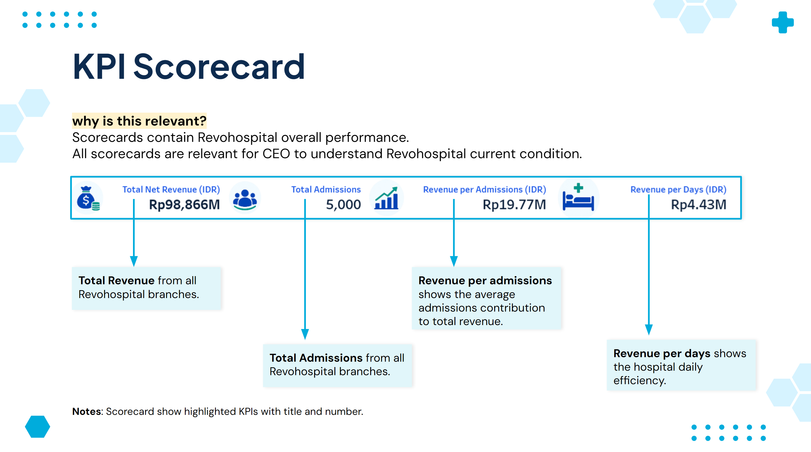
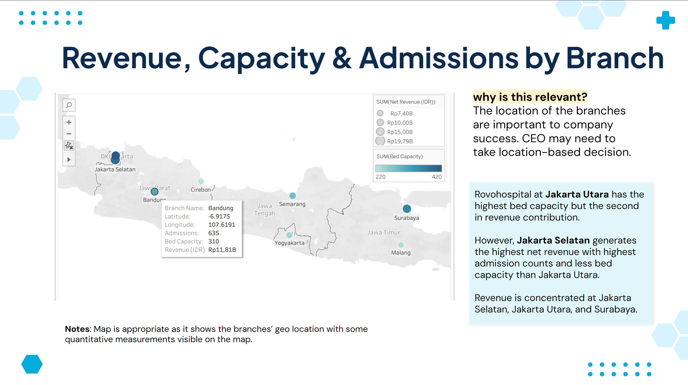
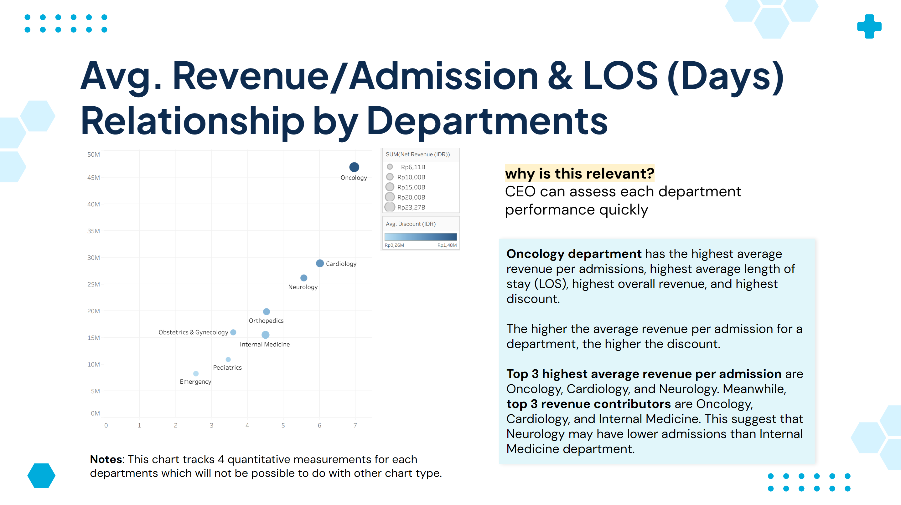

Hospital Performance Review
Built an executive Tableau dashboard to monitor hospital revenue, admissions, and operational performance across branches, helping leadership identify revenue drivers and improve decision-making.

Project Overview
Summary / Context
Developed an executive dashboard for a multi-branch hospital network to monitor financial and operational performance across branches and departments.
Goals
Enable executives to monitor KPIs, compare branch performance, identify revenue drivers, and explore operational trends through interactive analysis.
Process
Integrated six hospital datasets, defined business KPIs, designed interactive visualizations, and translated analytical findings into actionable recommendations.
Output
Delivered an interactive Tableau dashboard with KPI scorecards, branch maps, revenue trends, referral analysis, department performance, and doctor metrics. The analysis highlighted high-performing branches, revenue concentration, payment patterns, and operational improvement opportunities.
Key Responsibilities
- Integrated six relational datasets into a single executive reporting dashboard.
- Designed KPI scorecards to monitor revenue, admissions, and operational efficiency.
- Built interactive visualizations for branch, department, and referral source analysis.
- Identified revenue concentration, payment trends, and operational improvement opportunities.
Tools & Methods
Tools
Methods
Recommendations
- Expand successful practices from high-performing branches to lower-performing locations.
- Improve insurance claim processing to reduce outstanding payments.
- Strengthen partnerships with referral sources that generate higher revenue.
- Review department capacity to balance admissions and resource utilization.
Project Gallery


